Research, in action. From international research presentations and keynote addresses to public-safety technology demonstrations, these moments reflect the ideas, collaborations, and people behind my work.
All photos Conference Awards Innovation Talks
29 photos
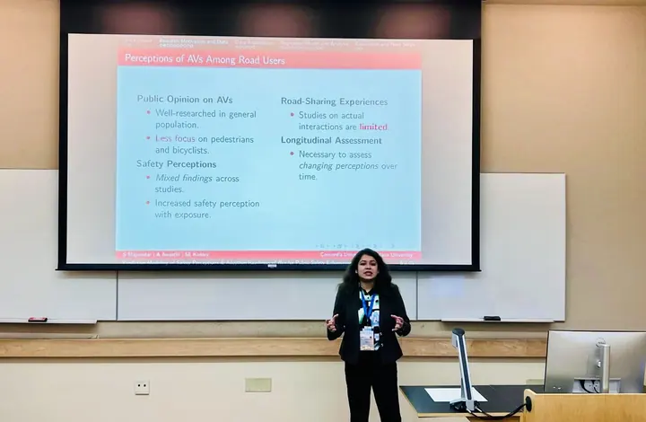
Autonomous vehicle research Presenting research on public perception, trust and AV adoption. 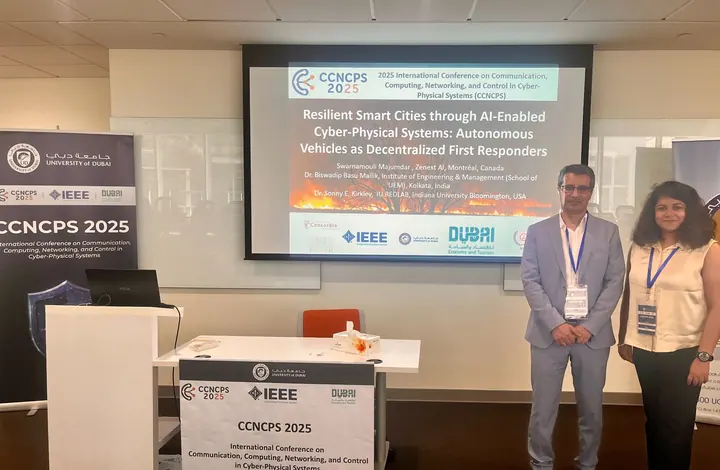
CCNCPS 2025 · Autonomous first responders Presentation on AI-enabled cyber-physical systems for resilient smart cities. 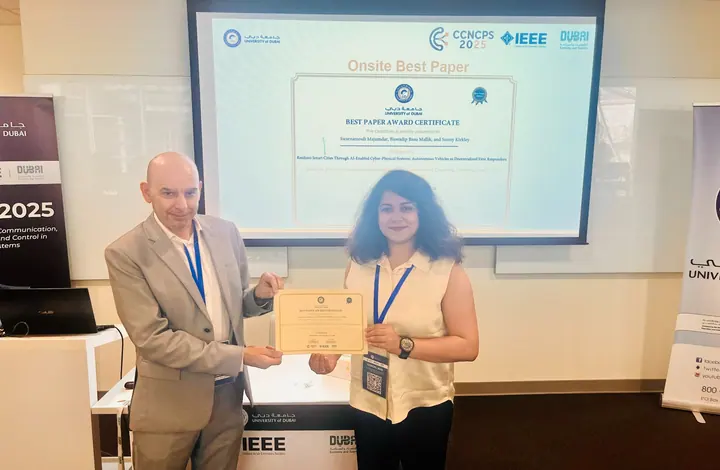
CCNCPS 2025 · Award certificate Recognition ceremony at the University of Dubai. 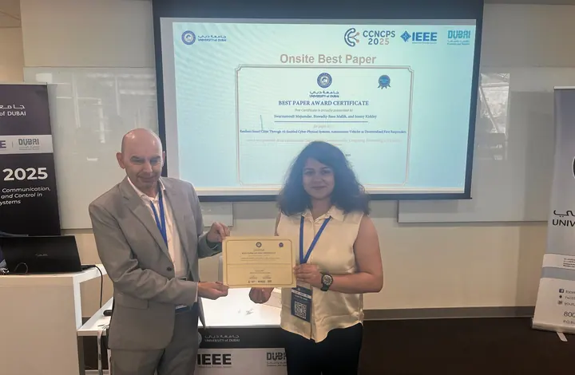
CCNCPS 2025 · Best Paper Onsite Best Paper Award presentation in Dubai. 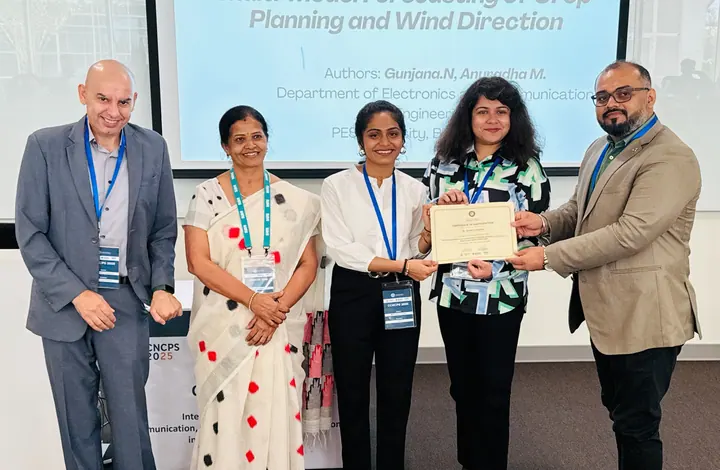
CCNCPS 2025 · Research community Certificate presentation with conference participants. 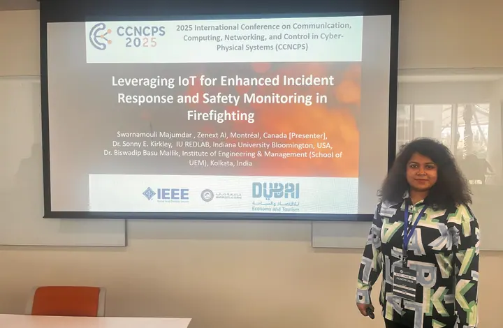
CCNCPS 2025 · Firefighter safety Presentation on IoT-supported incident response and safety monitoring. 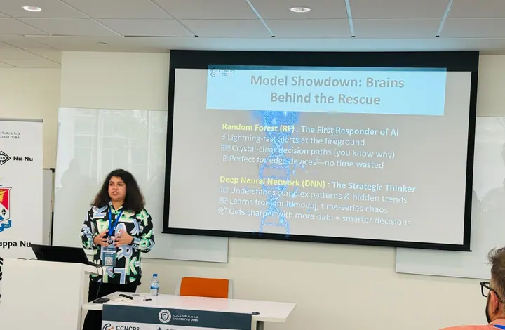
CCNCPS 2025 · Model comparison A research talk comparing methods for emergency-response decision support. 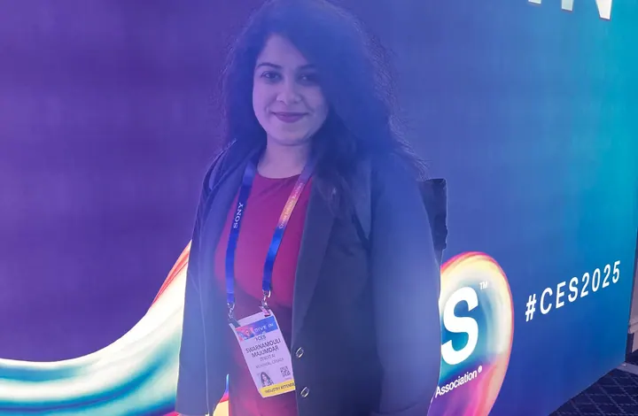
CES 2025 · Technology forum Participating in the consumer technology research community. 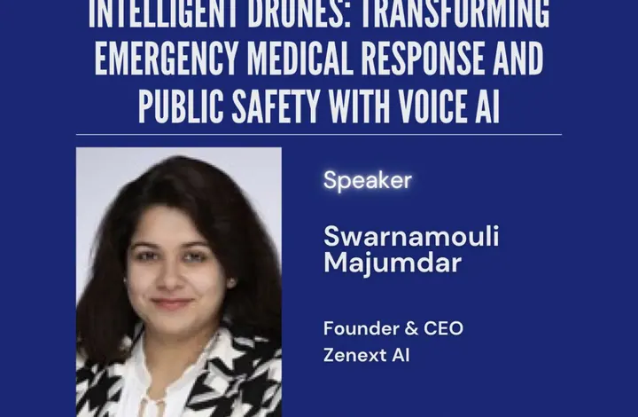
CES 2025 · Invited session Event announcement for a talk on intelligent drones and voice AI. 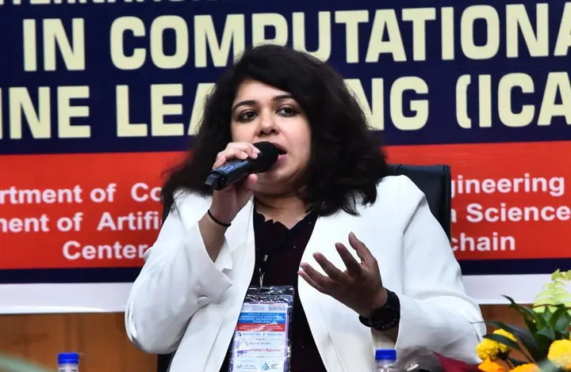
ICACIML 2026 · Keynote Artificial Intelligence for Safer Cities and Communities, Hyderabad. 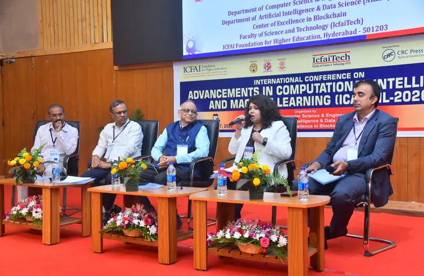
ICACIML 2026 · Industry panel Panel discussion at ICFAI Tech, Hyderabad. 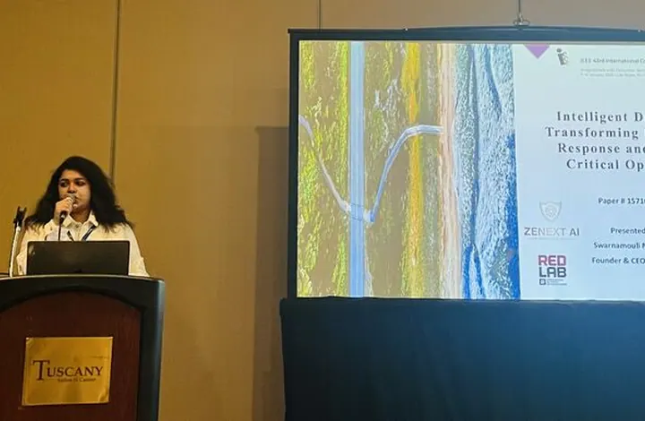
IEEE ICCE 2025 · Intelligent drones Research presentation on emergency-response UAVs. 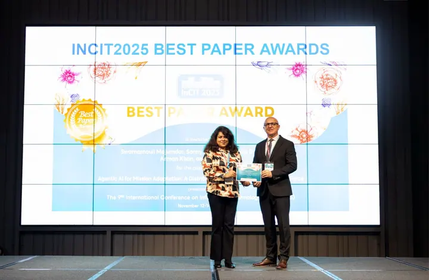
InCIT 2025 · Best Paper Award Award ceremony for research on mission adaptation and distributed cognition. 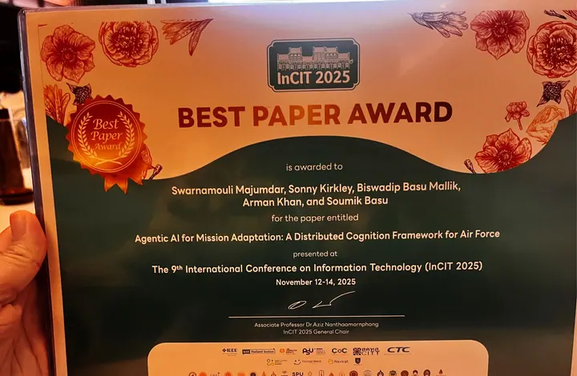
InCIT 2025 · Best Paper certificate Close-up of the award and research title. 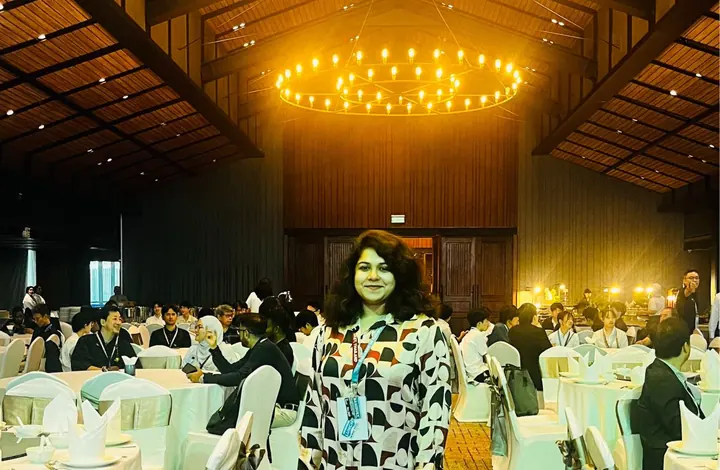
InCIT 2025 · Conference A moment from the international research gathering. 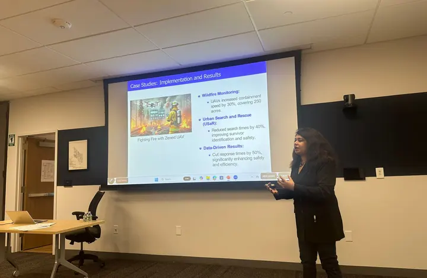
Research briefing A case-study presentation on UAV-supported emergency response. 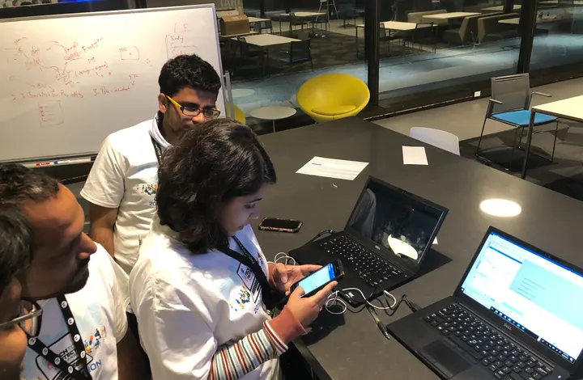
Tech to Protect · Design sprint Early team development and prototype planning. 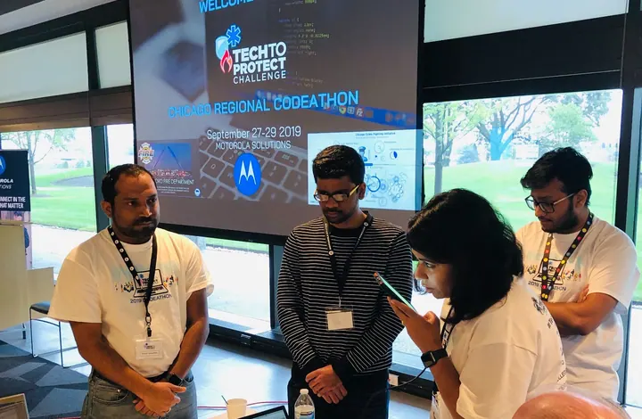
Tech to Protect · Demo Live demonstration of an early hands-free public-safety assistant. 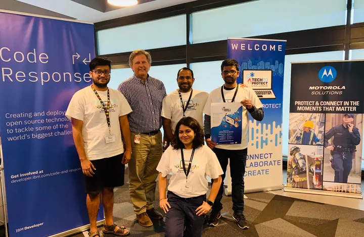
Tech to Protect · Team Research and development team at the public-safety coding challenge. 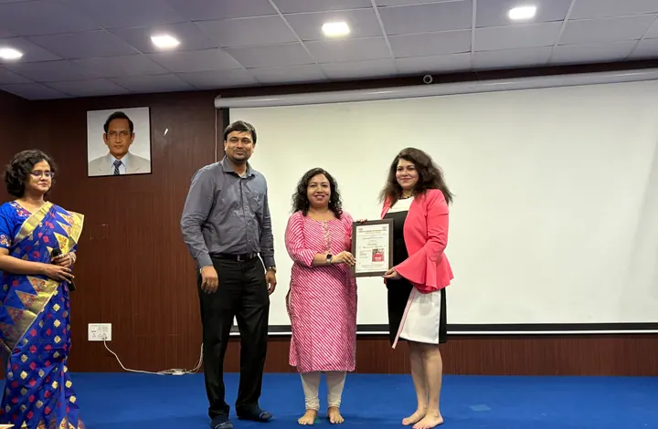
Institutional recognition A certificate presentation following an invited talk. 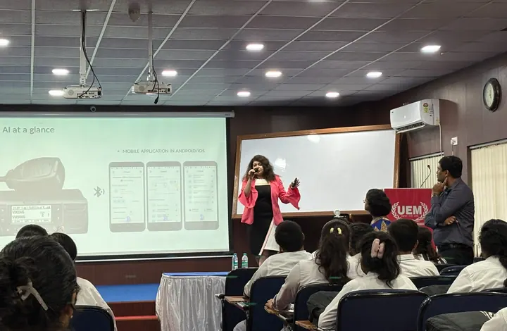
Academic invited talk · Audience Explaining hands-free responder tools to an academic audience. 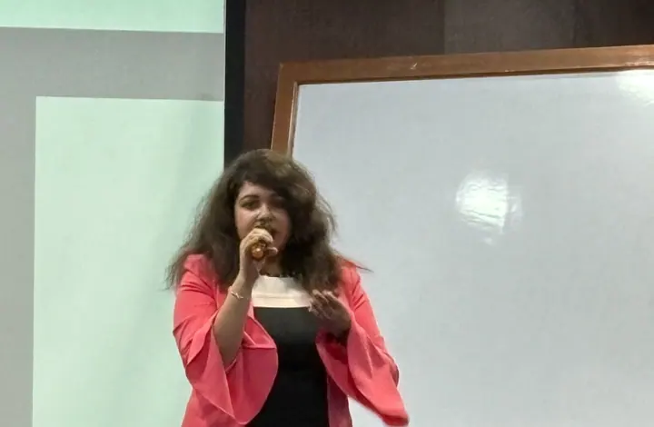
Academic invited talk Presenting voice AI and emergency-response technology. 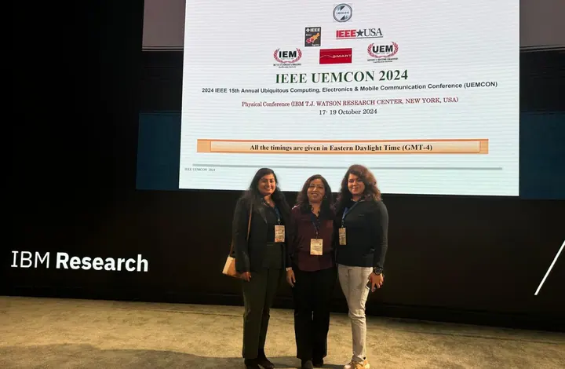
IEEE UEMCON 2024 · Collaborators Conference photo at IBM Research. 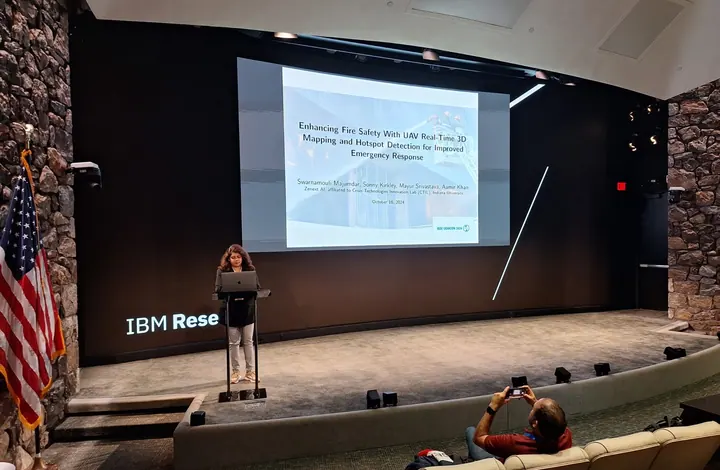
IEEE UEMCON 2024 · IBM Research Presenting UAV real-time 3D mapping and hotspot detection in New York. 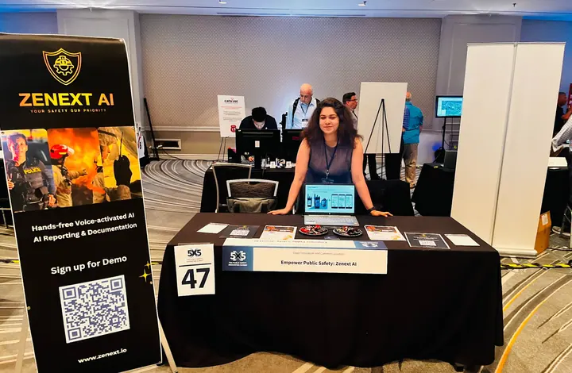
Zenext AI · 5×5 Summit booth Hands-free voice AI demonstrations for public safety. 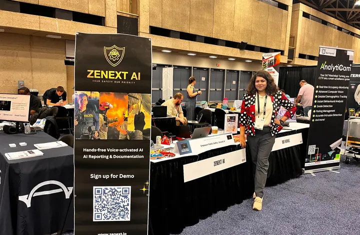
Zenext AI · Exhibition Technology showcase featuring voice-enabled responder tools. 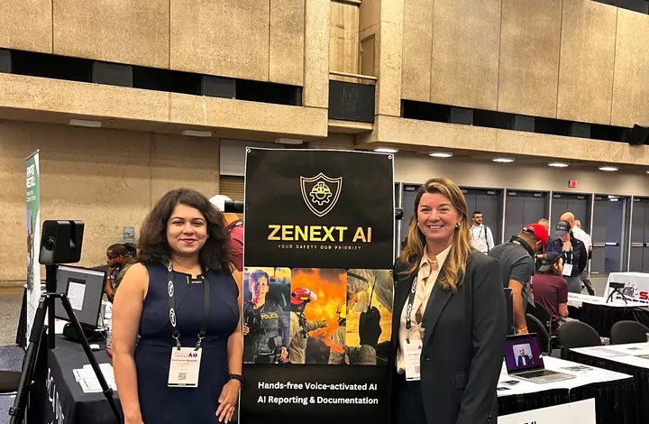
Zenext AI · Stakeholder engagement Conversation with an expo visitor about emergency-response technology. 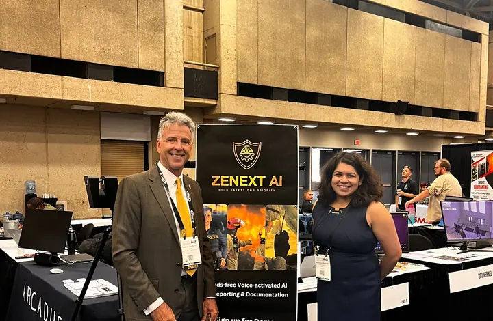
Zenext AI · Expert engagement Connecting with public-safety practitioners at a technology event. 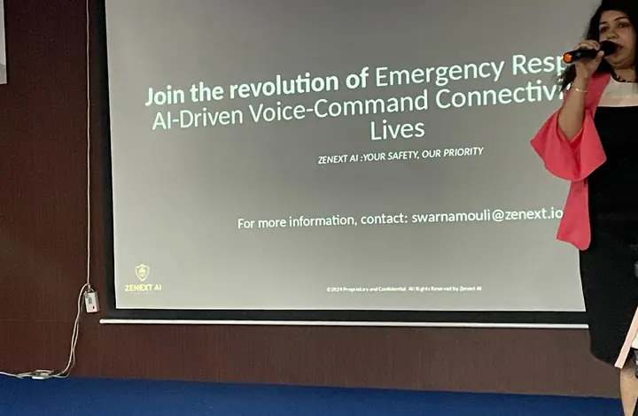
Voice-command systems · Presentation Introducing AI-driven voice-command connectivity for public safety. No photos match these filters.
×